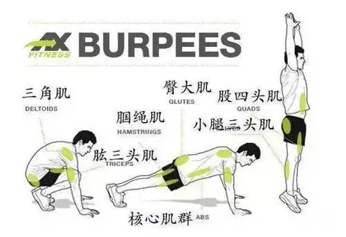
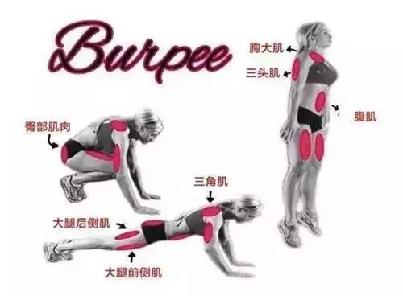

立卧撑（英文：Burpee）简单地讲，就是先做一个俯卧撑，然后收腿、站起来。重复以上动作，趴下，俯卧撑一次，再站起来。别看就这么一个小小的变化，比起单纯的俯卧撑，立卧撑练得地方多得多，也累得多。因此，立卧撑是很好的全身性锻炼动作。
世界公认的脂肪杀手动作看上去虽然很简单，但减脂效果超强。它能使心率达到很高的水平，让身体在短时间内做大功率输出，从而在短时间内消耗大量能量和脂肪。有科学研究表明，立卧撑的热量消耗是跑步的两倍。
这种训练还能够加快身体新陈代谢，高效燃烧脂肪，对提高肌肉线条也有很好的帮助
除了减脂，这个动作还能加强心肺功能，让身体处于更高的健康水平。当你进行次数较多的训练模式时，立卧撑将会成为一种高强度间歇式的有氧训练方法，可以显著提高心肺功能水平。
立卧撑是全身性锻炼动作，对全身肌肉都有很好的刺激效果，能提高身体敏捷、协调、爆发力等，是提高运动能力的绝佳动作。许多运动员都会用到这个动作，帮助提高下肢爆发力和全身协调性。
整套动作下来，可以训练到手臂、腹部、腿部、臀部、胸部等肌肉群。请看下图：
这种将抗阻训练和有氧运动完美结合的复合型锻炼方法，能让你顺利减脂，提高身体全面机能，绝对是健身第一神器。
之所以能让无数健身者又爱又恨，因为它能完全榨干体能，做到做后甚至会有生不如死的感觉。